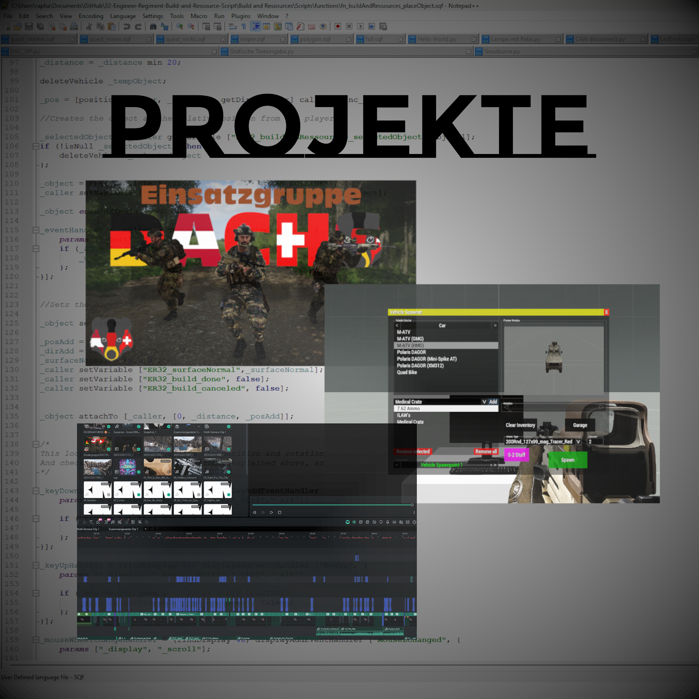
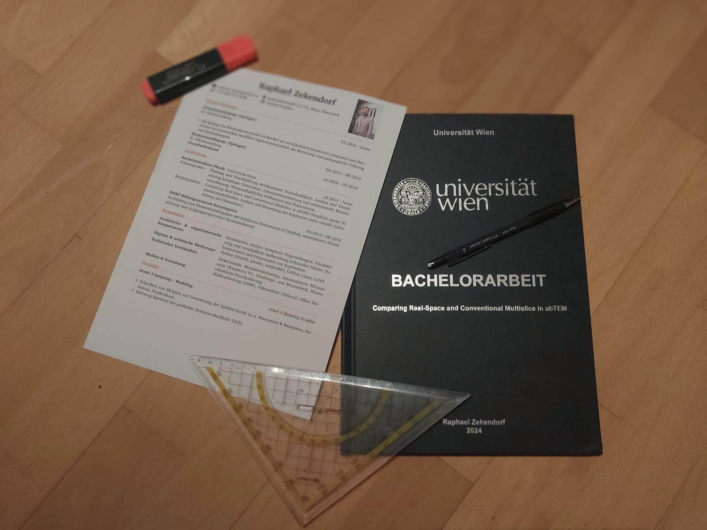

Willkommen
auf meiner Portfolio Website. Hier können Sie mehr über mich, meine Projekte und Dokumente erfahren.



Projekte
Unterschiedliche Projekte an denen ich arbeite.
Ressource and Build System
Enables players to build pre-determined structures...
Roadbuilding System
This project will try to bring road construction into ArmA 3. By multiple steps the player will be able to remove obstacles, fill a truck with sand, place the sand on the ground. flatten the sand with a driveable bulldozer.
Persistency System
This script enables the saving from spawned objects from the Ressource-And-Build and Roadbuilding System. Later loading through the editor is then possible.
Vehicle Spawner
Enables the spawning and configuration of vehicles with a custom GUI.
Random Room Generator
Generates randomly selected preset rooms, connected together and with a collission detection.
Dokumente
Alle Dokumente auf einen Platz.